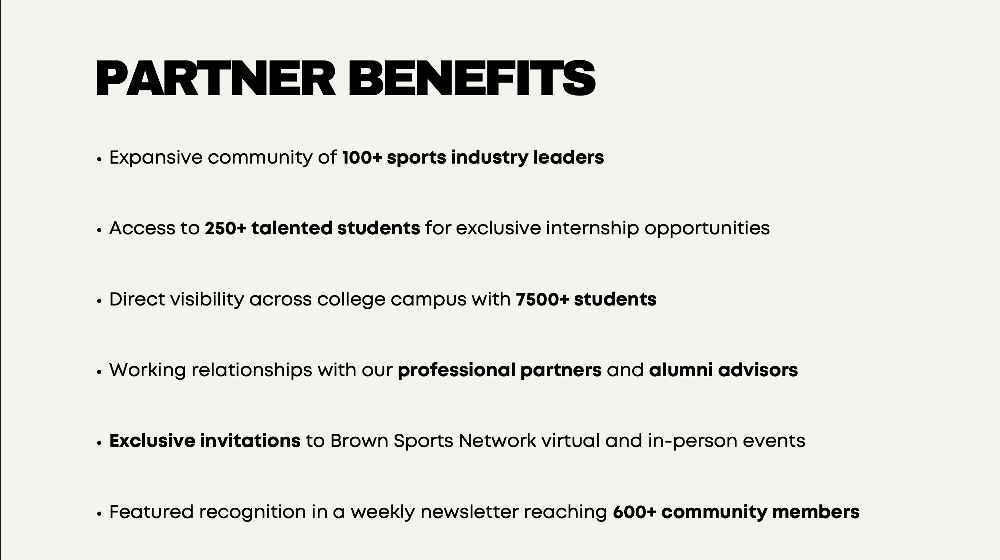
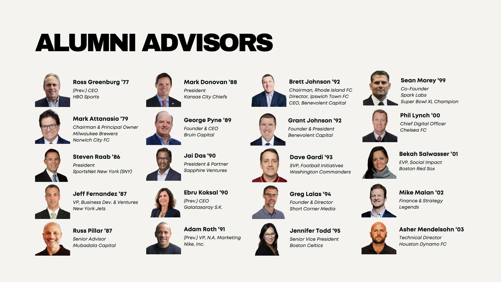
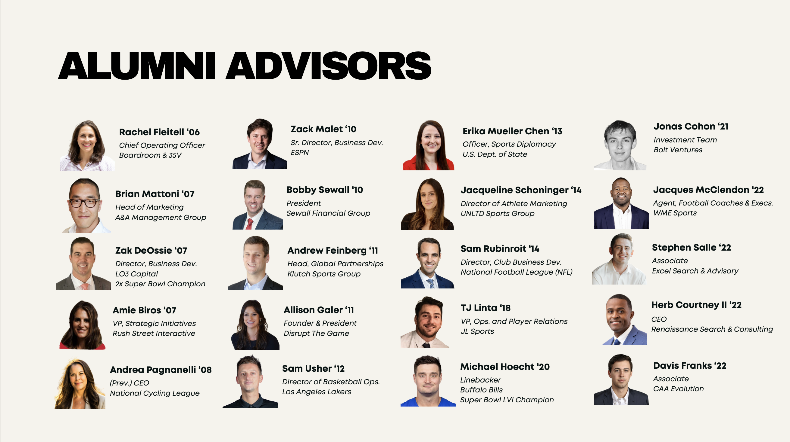
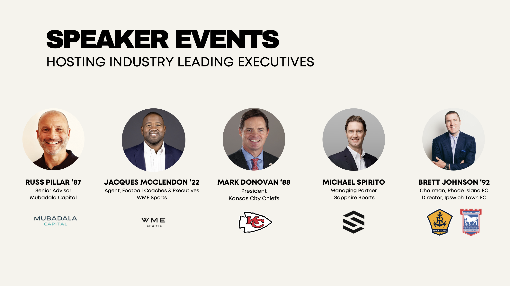
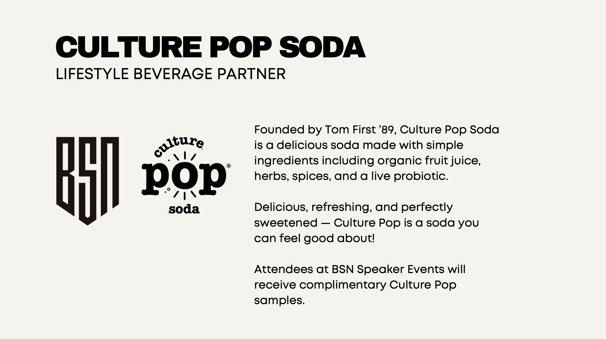
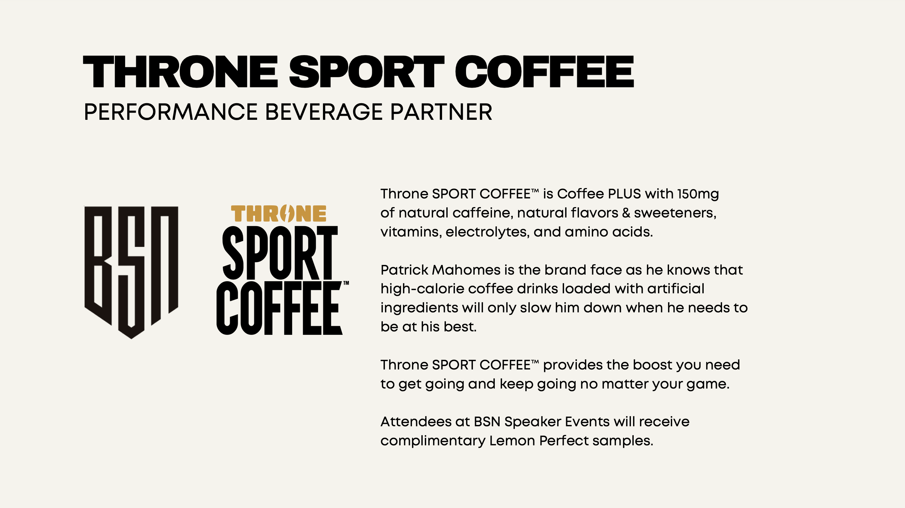
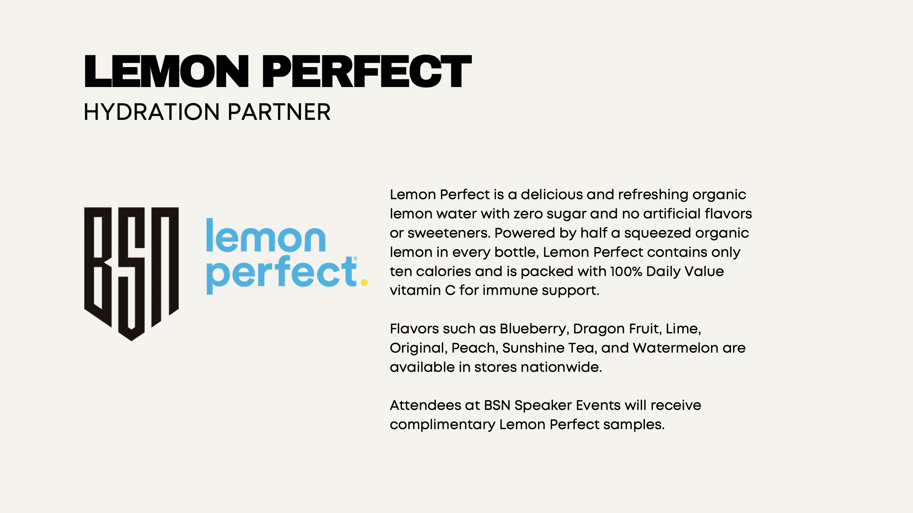
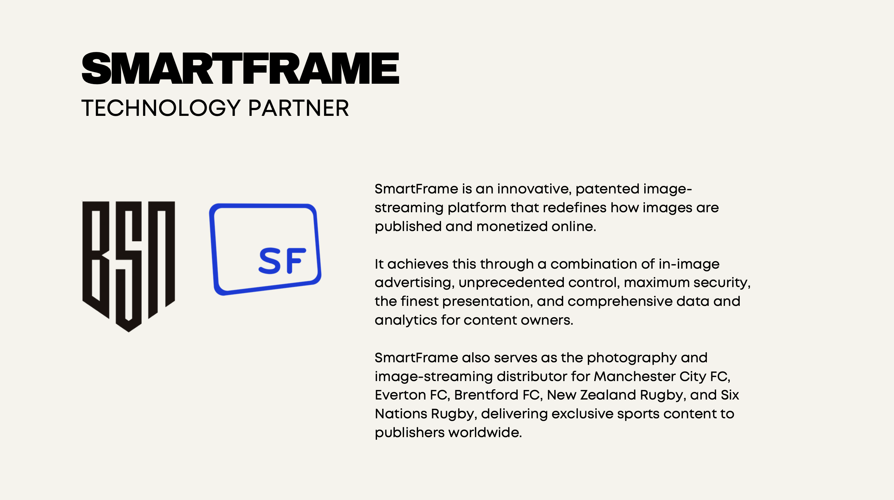

BSN: Launching Careers in the Sports Industry
250+ Students. 100+ Executives. 1 Powerful Ecosystem.

250+ Students. 100+ Executives. 1 Powerful Ecosystem.
VP of Alumni & Analytics
Brown Sports Network
2023 - Present
248+ Students Engaged
At Brown, students passionate about the sports industry lacked structured pathways into professional careers. I co-led the creation of Brown Sports Network (BSN) to build that bridge — connecting students with senior executives, securing real-world consulting projects, and launching mentorship pipelines.
In just over a year, BSN grew into one of Brown's fastest-expanding pre-professional networks, creating opportunities across sports business, media, tech, and operations.

Built a senior advisory board spanning major sports organizations, including:


Co-developed the BSN Speaker Series, hosting leading executives including:

Helped secure and grow BSN's sponsorship network, bringing brands into the BSN ecosystem:




Launched a 1:1 mentorship program matching students with industry executives, leading to:
My Role: Project architect and lead for analytic structure
Goal: Identify overlooked draft prospects using advanced player data and historical drafting patterns
Status: Active project, final deck delivery scheduled Summer 2025
My Role: Strategy advisor and project structure contributor
Goal: Support TSG Hoffenheim's U.S. entry strategy through student-driven commercial research
My Role: Early-stage project contributor
Goal: Build Rhode Island FC's visibility and fan engagement among college students
"BSN taught me how to turn an idea into a professional pipeline impacting hundreds — and I'm just getting started."
BSN taught me how to build ecosystems: how to connect people, structure opportunity pipelines, and scale impact sustainably. From analytics projects to mentorship matching to securing corporate sponsors, I saw how holistic, community-driven strategy creates real outcomes — for students, for partners, and for the future of sports business.